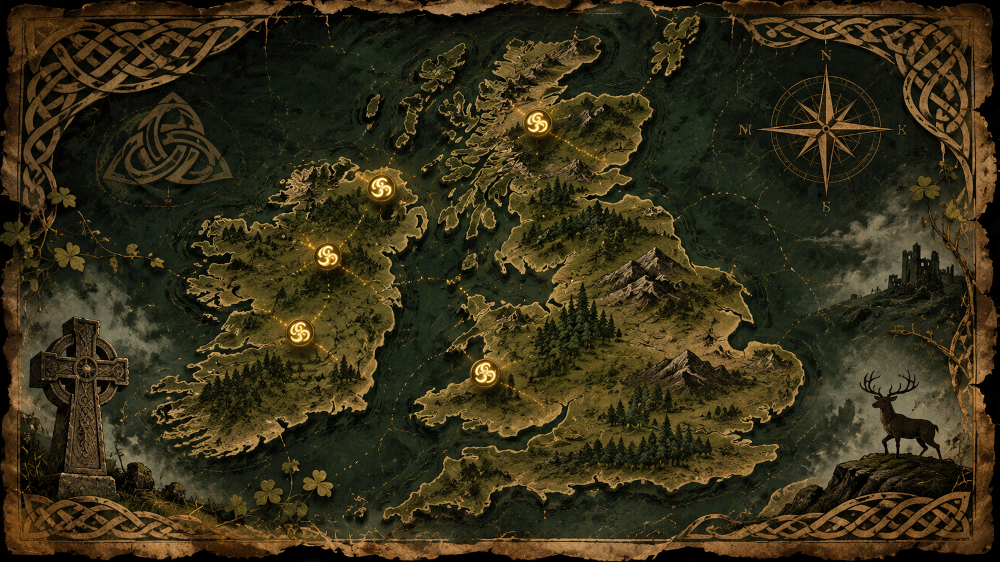

Кельтский фольклор
Там, где древние леса скрыты туманом, камни помнят голоса друидов, а за пределами человеческого мира продолжают жить легенды.
Войти в мир легендМифические существа
Среди туманных озёр и зачарованных лесов скрываются существа, о которых рассказывают старинные кельтские легенды.
Книга легенд
Откройте древнюю книгу и прочитайте печальную историю четырёх детей короля Лира.
Нажмите на книгу, чтобы открыть её
Ночные предания
Три загадочные истории, которые оживают после захода солнца.
Тайный портал
За древними дверями скрывается одна из тайн кельтского мира. Осмелитесь ли вы открыть их?
Прикоснитесь к древним вратам
Древние артефакты
Три легендарных предмета, связанных с мифами древней Ирландии.
Испытание друида
Древние камни хранят знания прошлого. Ответьте на вопросы и получите своё звание.
Испытание древнего друида
Вас ждут пять вопросов о кельтских преданиях и их загадочных героях.
Свидетельство друида
Карта легенд
Исследуйте мистические места Ирландии, Шотландии и Уэльса.

Нажмите на светящуюся точку, чтобы узнать легенду